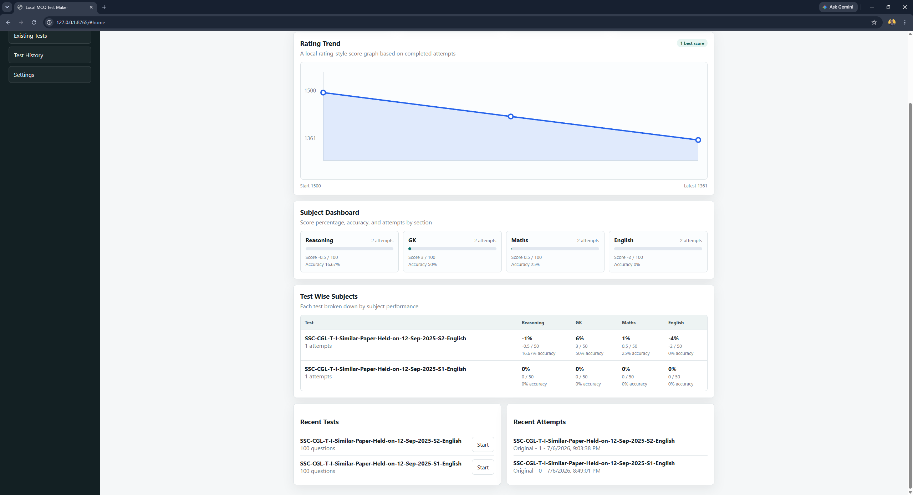
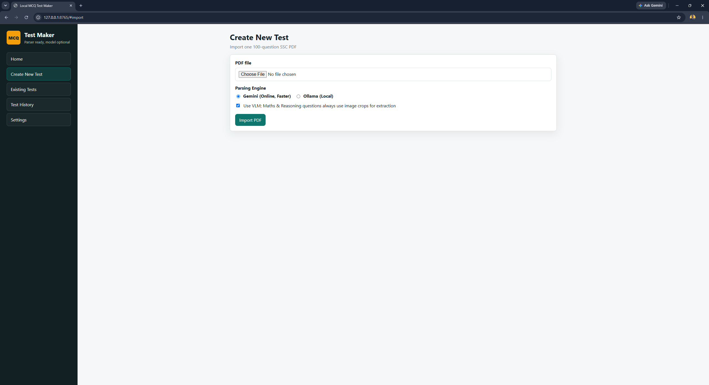
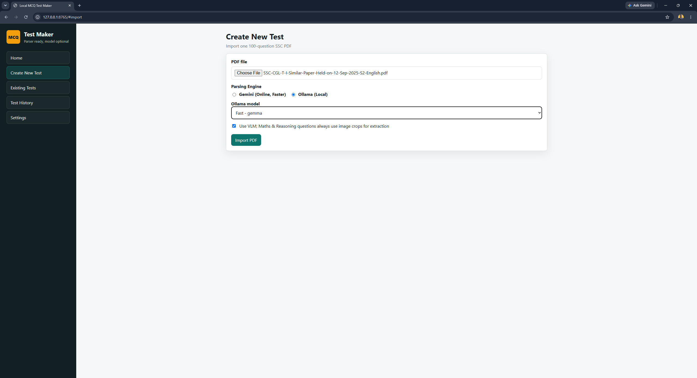
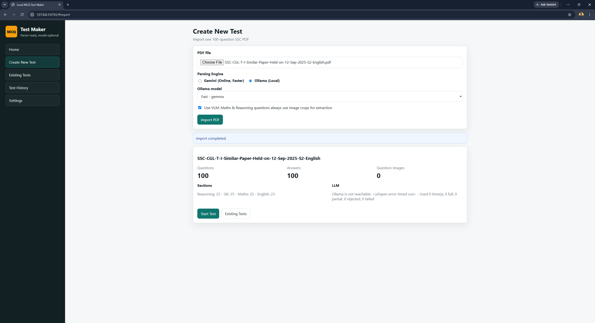
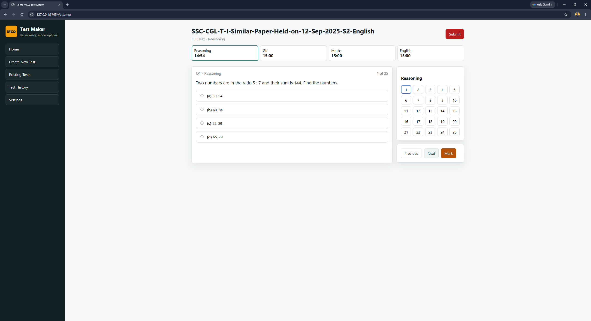

Transform SSC Exam PDFs into Interactive Local Tests
A powerful, local-first web application that uses deterministic regex parsing and AI vision fallbacks (Ollama & Gemini) to effortlessly convert your study materials into interactive practice sessions.
Run entirely offline on your own hardware. Tests and progress are saved securely to your local SQLite database.
If a question contains complex math or LaTeX, it seamlessly repairs using Local Ollama or Google Gemini API.
Practice in a relaxed environment, sprint through sections, or simulate a full timed test seamlessly.
A glimpse into the sleek and efficient interface designed for maximum productivity.

Track your test imports and progress in one place

Select your SSC exam PDFs for quick parsing

Smart extraction with fallback LLM capabilities

Review successfully extracted questions

Take tests section-wise with a clean, distraction-free UI